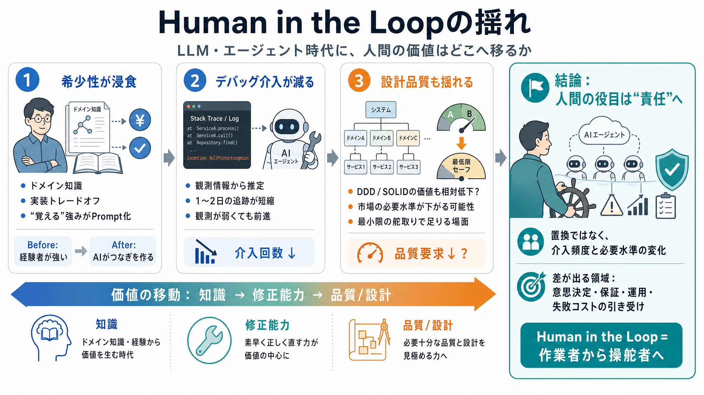

I Tested 15 LLMs on 38 Real Coding Tasks. Here's My Routing Table.
* [LLM Benchmark Rankings 2026](https://ianlpaterson.com/blog/llm-benchmark-2026-38-actual-tasks-15-models-for-2-29/).…

LLMとエージェントの進化で「人間が介在する価値」は縮むのか。縮むなら、ソフトウェアエンジニアの武器は何に変わるのか。
投稿者は、経験から得た柱（ドメイン知識→デバッグ→分散と設計思想）が、相対的に価値を失っていく感覚を語る。Human in the Loopは「必要な人」から「たまに舵を切る人」へ寄っていく。
投稿の骨子は「知識→修正能力→品質/設計」が順に相対価値を落とす、という道筋だ。人間が介入する“回数”と“必要水準”が下がる。
AIで設計ドキュメント作成の速度が上がると、長年の“実装トレードオフ”がつながってしまう衝撃があった。例として、決済の冪等性（double-charge防止）のような難所が部分的に再現される。
従来は、金融・決済のように「覚えるしかない知識」と運用の勘所が差別化になりやすかった。AI支援で“作業の再現性”が上がると、専門家プレミアムが薄れる可能性が示唆される。
投稿では、AIがコード生成だけでなく、スタックトレースや観測情報を手がかりに修正を進める。従来1〜2日かけて追っていたバグが短時間で解ける割合が増えたという。
分散可観測性（観測の不足）がある環境でも、エージェントが推定→修正を進めて介入余地が減る、と語られる。難所が「人間だけの前提」から外れていく。
結果として、ドメインの難所もデバッグの勘も「ある程度は指示で再現」される方向になる。市場は専門家より、汎用的に使える人へ寄る懸念がある。
投稿者はDDDやクリーンアーキテクチャのような嗜好が最後に残ると考えた。しかし、エージェントが整理を壊す可能性もあり、市場の品質要求が下がる不安がある。
人間は「完全に崩れる前の最小限の舵取り」だけで足りるケースが増えるかもしれない。市場が“理想品質（A/B）”を要求しなくなるなら、アーキテクチャ専門性も浸食されうる。
当面の雇用はあるが長期は不透明として、「AIが得意でない方向へ差が出る領域」を探す必要を示唆する。学術転進は難しいため、当事者は職能を再構築する必要性に行き着く。
置換ではなく「介入頻度」と「品質水準」の変化が中心だ、という捉え方がバランスの良い見通しになる。AIが得意な領域を前提に、責任・意思決定・品質保証・組織運用で差を出す。
* [LLM Benchmark Rankings 2026](https://ianlpaterson.com/blog/llm-benchmark-2026-38-actual-tasks-15-models-for-2-29/).…
[46:30 Inside YC's AI Playbook Y Combinator 18K views • 13 hours ago Live Playlist ()Mix (50+)](https://www.youtube.com/…
If 2023 was the year large language models surprised the world, and 2024–2025 were the years they matured, 2026 is the y…
... Distributed Systems: https://www.educative.io/courses/grokking-modern-system-design-interview-for-engineers-managers…
In this survey, we broadly investigate the current practice and solutions for LLMs and LLM-based agents for software eng…